Netty 学习笔记
Netty学习笔记整理
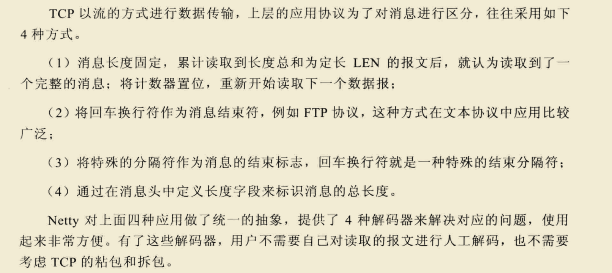
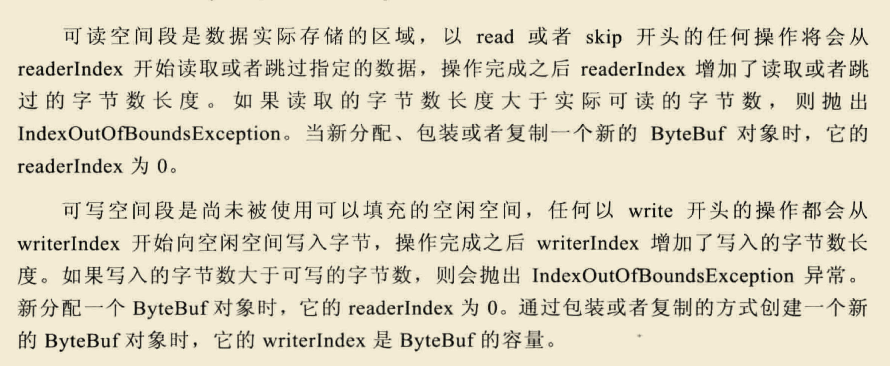
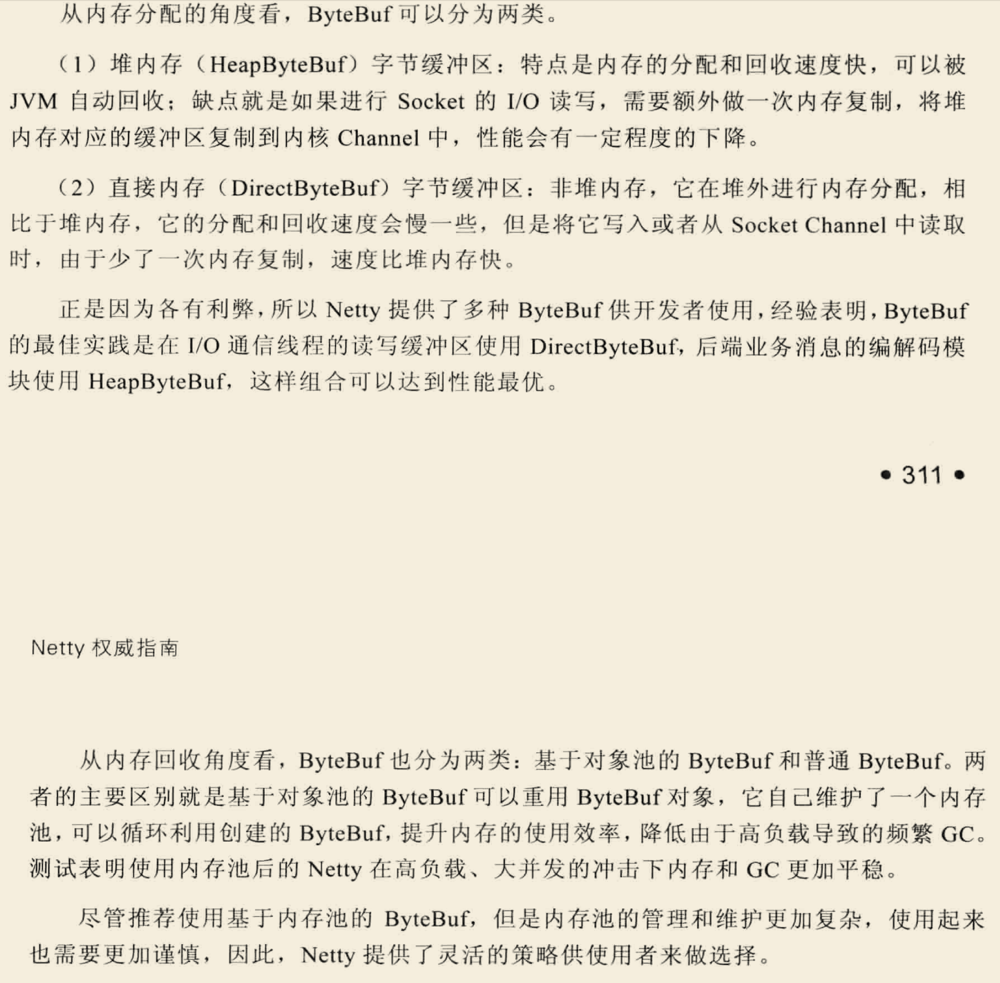
ByteBuffer的底层实现是byte数组
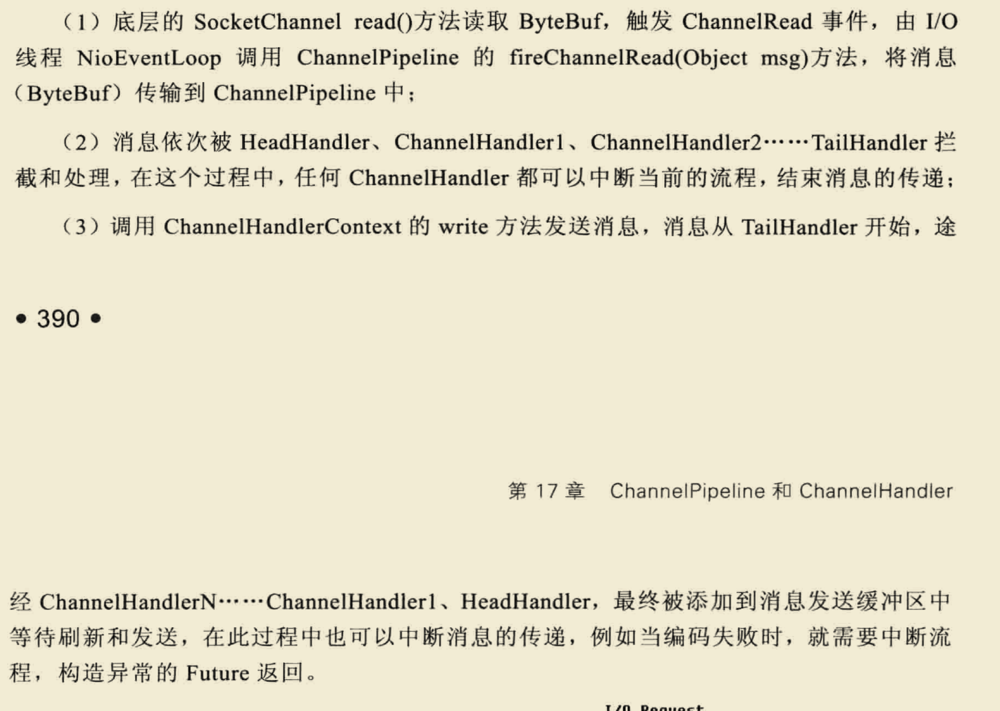
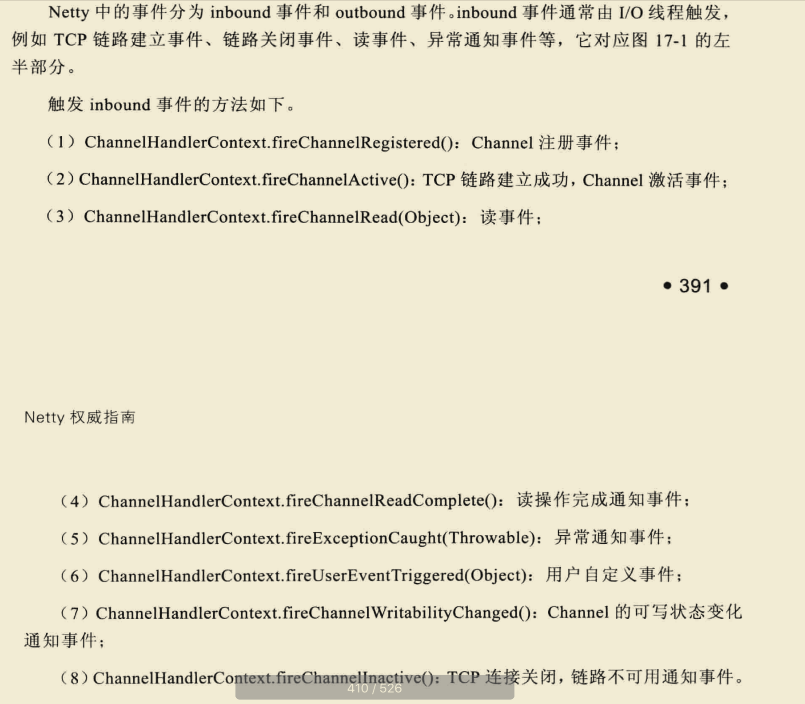
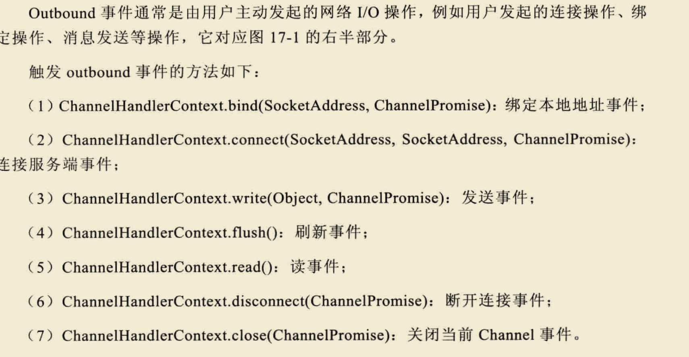
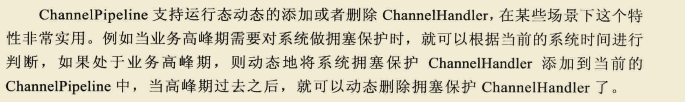
- full gc时才会回收堆外内存。
- Netty之Java堆外内存扫盲贴 | 鸟窝
- 每个 Channel 都有一个 ChannelPipeline
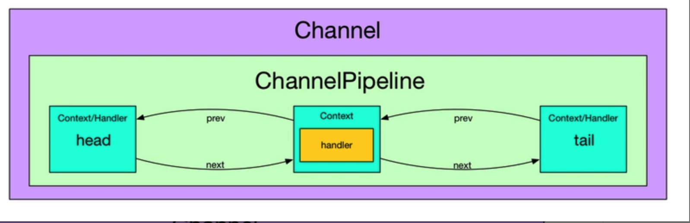
通过上图我们可以看到, 一个 Channel 包含了一个 ChannelPipeline, 而 ChannelPipeline 中又维护了一个由 ChannelHandlerContext 组成的双向链表. 这个链表的头是 HeadContext, 链表的尾是 TailContext, 并且每个 ChannelHandlerContext 中又关联着一个 ChannelHandler
LineBasedFrameDecoder关键源码剖析1
2
3
4
5
6
7
8
9
10
11
12
13
14
15
16
17
18
19
20
21
22
23
24
25
26
27
28
29
30
31
32
33
34
35
36
37
38
39
40
41
42
43
44
45
46
47
48
49
50
51
52
53
54
55
56
57
58
59
60
61
62
63
64
65
66
67
68
69
70
71
72
73
74protected Object decode(ChannelHandlerContext ctx, ByteBuf buffer) throws Exception {
final int eol = findEndOfLine(buffer);
if (!discarding) {
if (eol >= 0) {
// 找到分隔符
final ByteBuf frame;
// 需要读取的长度为第一个分隔符偏移量减去readerIndex
final int length = eol - buffer.readerIndex();
final int delimLength = buffer.getByte(eol) == '\r'? 2 : 1;
// 超过最大长度则异常并修改readerIndex 抛弃数据
if (length > maxLength) {
buffer.readerIndex(eol + delimLength);
fail(ctx, length);
return null;
}
if (stripDelimiter) {
frame = buffer.readRetainedSlice(length);
buffer.skipBytes(delimLength);
} else {
// 返回子bytebuf，包含分隔符
frame = buffer.readRetainedSlice(length + delimLength);
}
return frame;
} else {
// 未找到分隔符
final int length = buffer.readableBytes();//当前可读字节数
if (length > maxLength) {// 大于消息最大字节数
discardedBytes = length;//抛弃当前可读字节
buffer.readerIndex(buffer.writerIndex());//readerIndex修改为writerIndex
discarding = true; // 抛弃模式
offset = 0;
if (failFast) {
fail(ctx, "over " + discardedBytes);
}
}
return null;// 返回null, 表示什麼都沒解析出來, 等著下次解析
}
} else {
if (eol >= 0) {
// 虽然找到了分隔符，但是当前为抛弃模式，所以这是上个超过最大长度的消息的一部分也就是一个半包消息，不做处理，继续往下read
final int length = discardedBytes + eol - buffer.readerIndex();
final int delimLength = buffer.getByte(eol) == '\r'? 2 : 1;
buffer.readerIndex(eol + delimLength);
discardedBytes = 0;// discardedBytes
discarding = false;
if (!failFast) {
fail(ctx, length);
}
} else {
// 未找到分隔符，因为处于抛弃模式，所以同上，抛弃之，但是要更新discardedBytes，方便日志记录
discardedBytes += buffer.readableBytes();
buffer.readerIndex(buffer.writerIndex()); // 继续往下读
offset = 0;// 因为修改了readerIndex 所以这里也重置偏移量
}
return null;
}
}
//查找最近一个分隔符
private int findEndOfLine(final ByteBuf buffer) {
//当前bytebuf可读长度 writerIndex-readerIndex
int totalLength = buffer.readableBytes();
int i = buffer.forEachByte(buffer.readerIndex() + offset, totalLength - offset, ByteProcessor.FIND_LF);
if (i >= 0) {
offset = 0;
if (i > 0 && buffer.getByte(i - 1) == '\r') {
i--;
}
} else {
// 未找到便修改偏移量，防止下次重复寻找
offset = totalLength;
}
return i;
}
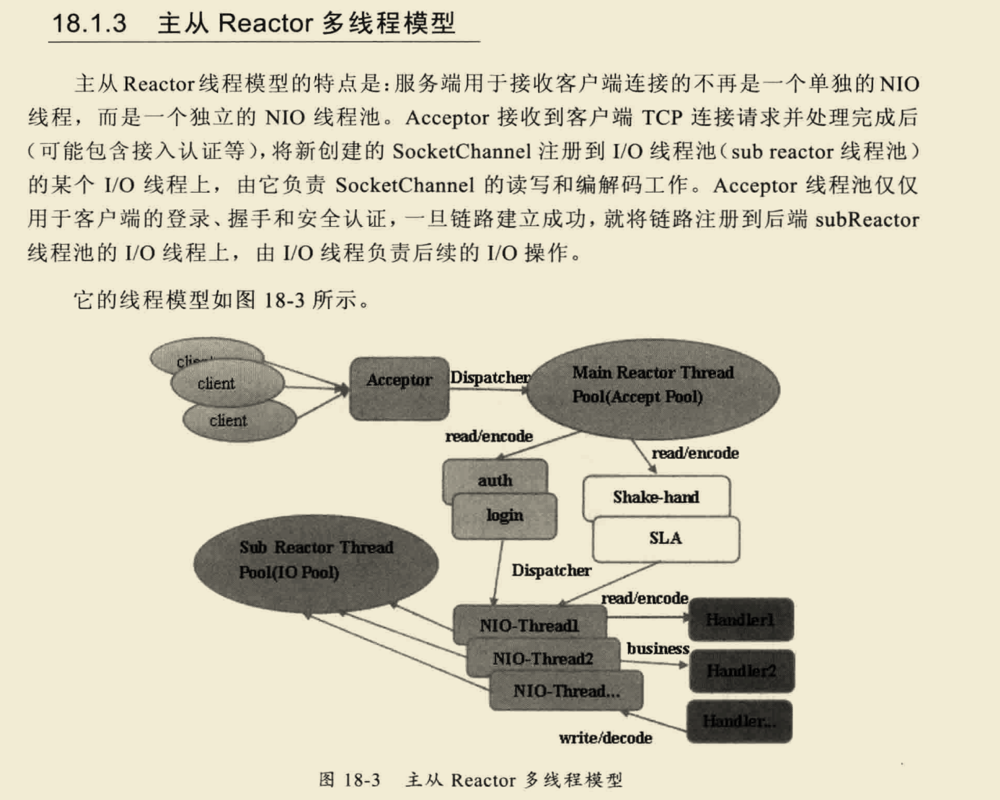
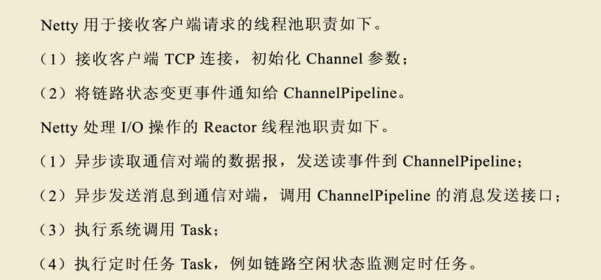
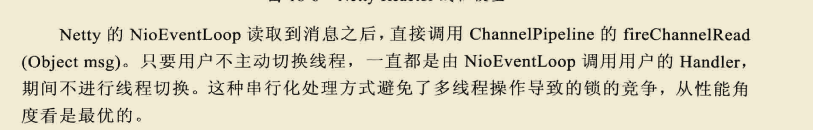
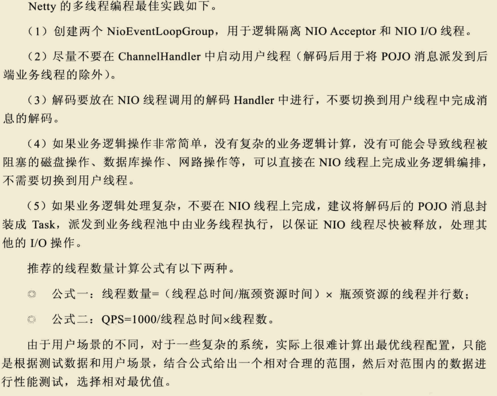
- Netty 4 的 Channel 多了一个 autoread 参数, 它的用处是在让 channel 在触发某些事件以后(例如 channelActive, channelReadComplete)以后还会自动调用一次 read()
- 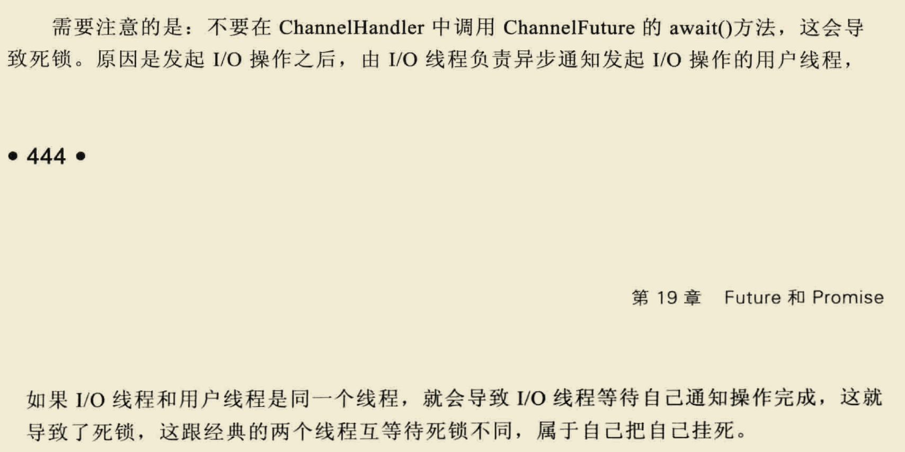
断包、粘包问题的解决
- 解决思路是在封装自己的包协议：包=包内容长度(4byte)+包内容
- 对于粘包问题先读出包头即包体长度n，然后再读取长度为n的包内容，这样数据包之间的边界就清楚了。
- 对于断包问题先读出包头即包体长度n，由于此次读取的缓存池长度小于n，这时候就需要先缓存这部分的内容，等待下次read事件来时拼接起来形成完整的数据包。
- 由于读取channel数据到ByteBuffer缓存池时ByteBuffer的大小限制，client的一次write事件不一定一一对应server的read事件，所以需要一个全局变量来缓存这部分不完整的数据包
NioEventLoopGroup实际上就是个线程池，NioEventLoopGroup在后台启动了n个NioEventLoop来处理Channel事件,每一个NioEventLoop负责处理m个Channel，NioEventLoopGroup从NioEventLoop数组里挨个取出NioEventLoop来处理Channel。
channelHandler的典型用例包括：
* 将数据从一种格式转换为另一种格式；
* 提供异常的通知；
* 提供Channel变为活动的或者非活动的通知；
* 提供当Channel注册到EventLoop或者从EventLoop注销时的通知；
* 提供有关用户自定义事件的通知。
在Netty中，有两种发送消息的方式。你可以直接写到Channel中，也可以写到和Channel-Handler相关联的ChannelHandlerContext对象中。前一种方式将会导致消息从Channel-Pipeline的尾端开始流动，而后者将导致消息从ChannelPipeline中的下一个Channel-Handler开始流动。
- 一个EventLoop在它的生命周期内只和一个Thread绑定；
- 所有由EventLoop处理的I/O事件都将在它专有的Thread上被处理；
- 一个Channel在它的生命周期内只注册于一个EventLoop ；
- 一个EventLoop可能会被分配给一个或多个Channel 。
epoll是linux特定内核，比如2.6以上的io方式。比如stackoverflow上有两者的比较，有人给出回复：If you are running on linux you can use EpollEventLoopGroup and so get better performance, less GC and have more advanced features that are only available on linux.就是在linux上使用EpollEventLoopGroup会有较少的gc有更高级的特性，只有在Linux上才可以使用。那么这句话几乎告诉我们epoll是最好的了，因为现在几乎所有的服务端程序都运行在Linux上。
NioEventLoop循环调用 Selector中的注册的SelectionKey获取每个连接的数据。然后把获取到的字节数据传送给ChannelPipeline处理。EpollEventLoop通过epollWait来得到数据事件，循环EpollEventArray的事件处理每个连接的数据。也是传给ChannelPipeline处理。所以epoll相对性能更高一些。Netty4增加了sharable注解，使得handler能够被添加到多个ChannelPipeline中，一个handler可以产生多个ChannelHandlerContext，使得对应的handler可以在不同的channel中使用，此时应该注意线程安全
当我们把一个Direct Buffer写入Channel的时候，就好比是“内核缓冲区”的内容直接写入了Channel，这样显然快了，减少了数据拷贝（因为我们平时的read/write都是需要在I/O设备与应用程序空间之间的“内核缓冲区”中转一下的）。而当我们把一个Heap Buffer写入Channel的时候，实际上底层实现会先构建一个临时的Direct Buffer，然后把Heap Buffer的内容复制到这个临时的Direct Buffer上，再把这个Direct Buffer写出去。当然，如果我们多次调用write方法，把一个Heap Buffer写入Channel，底层实现可以重复使用临时的Direct Buffer，这样不至于因为频繁地创建和销毁Direct Buffer影响性能
Netty堆外内存泄露排查盛宴 - 美团技术团队
Netty 源码分析之 二 贯穿Netty 的大动脉 ── ChannelPipeline (一) - 后台开发 - SegmentFault 思否